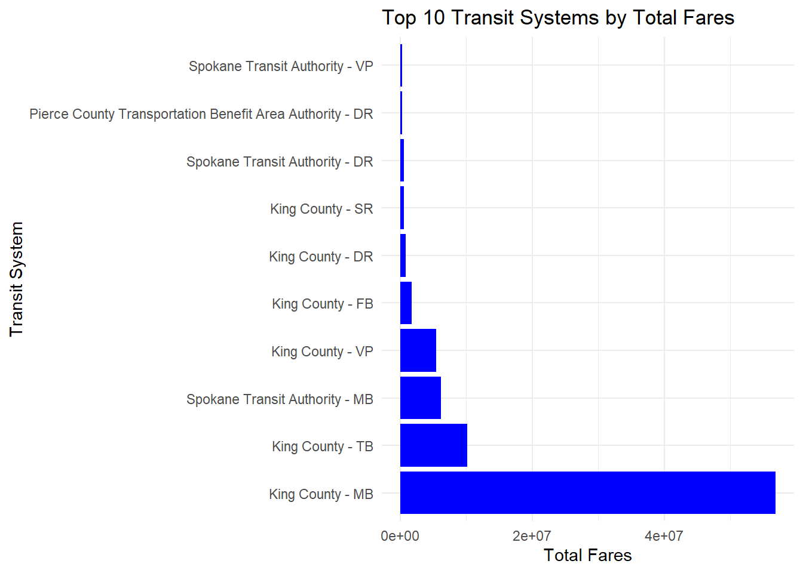
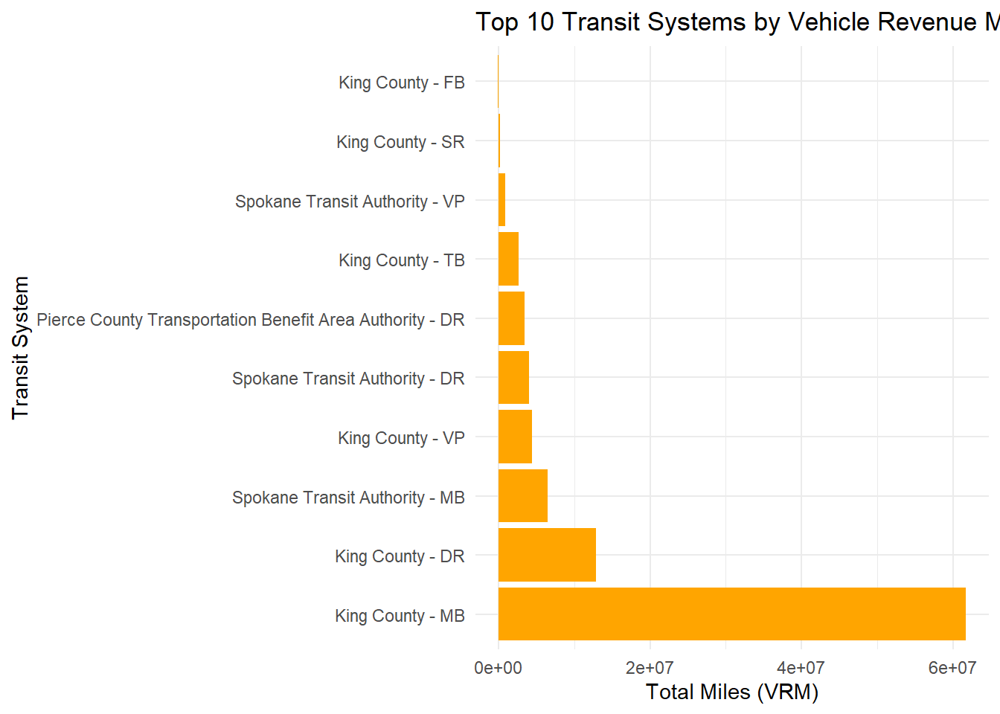
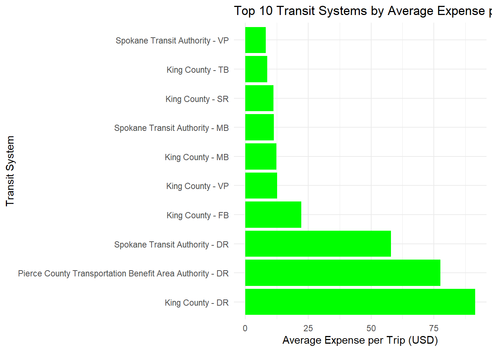

This document contains code to load, process, and analyze transit data.
Setup
Let’s begin by clearing the environment and setting the working directory.
Let’s start with creating the 2022_fare_revenue.xls file
Show the code
# Suppress package loading messagessuppressPackageStartupMessages({if(!require("tidyverse")) install.packages("tidyverse")library(tidyverse)})# Let's start by downloading the 2022 fare revenue file if it does not existif(!file.exists("2022_fare_revenue.xlsx")){# Download the file to the working directorydownload.file("http://www.transit.dot.gov/sites/fta.dot.gov/files/2024-04/2022%20Fare%20Revenue.xlsx", destfile ="2022_fare_revenue.xlsx", quiet =FALSE, method ="wget")}
1 Var Create Variable Fares
Show the code
suppressPackageStartupMessages({if(!require("readxl")) install.packages("readxl")library(readxl)})# Create Variable FARES from the fare revenue dataFARES <- readxl::read_xlsx("2022_fare_revenue.xlsx") |>select(-`State/Parent NTD ID`, -`Reporter Type`,-`Reporting Module`,-`TOS`,-`Passenger Paid Fares`,-`Organization Paid Fares`) |>filter(`Expense Type`=="Funds Earned During Period") |>select(-`Expense Type`) |>group_by(`NTD ID`, `Agency Name`, `Mode`) |>summarize(`Total Fares`=sum(`Total Fares`)) |>ungroup()
`summarise()` has grouped output by 'NTD ID', 'Agency Name'. You can override
using the `.groups` argument.
Show the code
# Preview the first few rows of the FARES variablehead(FARES)
# A tibble: 6 × 4
`NTD ID` `Agency Name` Mode `Total Fares`
<dbl> <chr> <chr> <dbl>
1 1 King County Department of Metro Transit CB 5216912
2 1 King County Department of Metro Transit DR 832327
3 1 King County Department of Metro Transit FB 1715265
4 1 King County Department of Metro Transit LR 29386480
5 1 King County Department of Metro Transit MB 56846337
6 1 King County Department of Metro Transit SR 588495
Next, Create File 2022_expenses.csv
Show the code
# Check if the 2022_expenses.csv file exists, if not, download itif(!file.exists("2022_expenses.csv")){# Download the 2022 expenses datadownload.file("https://data.transportation.gov/api/views/dkxx-zjd6/rows.csv?date=20231102&accessType=DOWNLOAD&bom=true&format=true", destfile ="2022_expenses.csv", quiet =FALSE, method ="wget")}# Load the 2022_expenses.csv dataEXPENSES <- readr::read_csv("2022_expenses.csv")
Rows: 3744 Columns: 29
── Column specification ────────────────────────────────────────────────────────
Delimiter: ","
chr (10): Agency, City, State, NTD ID, Organization Type, Reporter Type, UZA...
dbl (2): Report Year, UACE Code
num (10): Primary UZA Population, Agency VOMS, Mode VOMS, Vehicle Operations...
lgl (7): Vehicle Operations Questionable, Vehicle Maintenance Questionable,...
ℹ Use `spec()` to retrieve the full column specification for this data.
ℹ Specify the column types or set `show_col_types = FALSE` to quiet this message.
Show the code
# Preview the first few rows of the EXPENSES datahead(EXPENSES)
# A tibble: 6 × 29
Agency City State `NTD ID` `Organization Type` `Reporter Type` `Report Year`
<chr> <chr> <chr> <chr> <chr> <chr> <dbl>
1 Port o… Pago… AS 91004 State Government U… Rural Reporter 2022
2 MTA Ne… Broo… NY 20008 Subsidiary Unit of… Full Reporter 2022
3 MTA Ne… Broo… NY 20008 Subsidiary Unit of… Full Reporter 2022
4 Lower … Port… WA 00401 Tribe Reduced Report… 2022
5 Phelps… Hold… NE 70182 City, County or Lo… Rural Reporter 2022
6 City o… Ojai CA 91058 City, County or Lo… Rural Reporter 2022
# ℹ 22 more variables: `UACE Code` <dbl>, `UZA Name` <chr>,
# `Primary UZA Population` <dbl>, `Agency VOMS` <dbl>, Mode <chr>,
# `Mode Name` <chr>, TOS <chr>, `Mode VOMS` <dbl>,
# `Vehicle Operations` <dbl>, `Vehicle Operations Questionable` <lgl>,
# `Vehicle Maintenance` <dbl>, `Vehicle Maintenance Questionable` <lgl>,
# `Facility Maintenance` <dbl>, `Facility Maintenance Questionable` <lgl>,
# `General Administration` <dbl>, …
Create the EXPENSES variable by reading the 2022_expenses.csv and processing it
Show the code
EXPENSES <- readr::read_csv("2022_expenses.csv") |>select(`NTD ID`, `Agency`,`Total`, `Mode`) |>mutate(`NTD ID`=as.integer(`NTD ID`)) |># Ensure NTD ID is integerrename(Expenses = Total) |># Rename the Total column to Expensesgroup_by(`NTD ID`, `Mode`) |># Group by NTD ID and Modesummarize(Expenses =sum(Expenses)) |># Summarize the total expensesungroup()
Rows: 3744 Columns: 29
── Column specification ────────────────────────────────────────────────────────
Delimiter: ","
chr (10): Agency, City, State, NTD ID, Organization Type, Reporter Type, UZA...
dbl (2): Report Year, UACE Code
num (10): Primary UZA Population, Agency VOMS, Mode VOMS, Vehicle Operations...
lgl (7): Vehicle Operations Questionable, Vehicle Maintenance Questionable,...
ℹ Use `spec()` to retrieve the full column specification for this data.
ℹ Specify the column types or set `show_col_types = FALSE` to quiet this message.
`summarise()` has grouped output by 'NTD ID'. You can override using the `.groups` argument.
Join the FARES and EXPENSES datasets to create the FINANCIALS dataset
# A tibble: 6 × 5
`NTD ID` `Agency Name` Mode `Total Fares` Expenses
<dbl> <chr> <chr> <dbl> <dbl>
1 1 King County Department of Metro Transit CB 5216912 0
2 1 King County Department of Metro Transit DR 832327 60540676
3 1 King County Department of Metro Transit FB 1715265 8899659
4 1 King County Department of Metro Transit LR 29386480 0
5 1 King County Department of Metro Transit MB 56846337 671653000
6 1 King County Department of Metro Transit SR 588495 12511637
Create the Monthly Transit Numbers file: ridership.xlsx
Show the code
library(tidyverse)# Check if ridership.xlsx file exists, if not, download itif(!file.exists("ridership.xlsx")){download.file("https://www.transit.dot.gov/sites/fta.dot.gov/files/2024-09/July%202024%20Complete%20Monthly%20Ridership%20%28with%20adjustments%20and%20estimates%29_240903.xlsx", destfile ="ridership.xlsx", quiet =FALSE, method ="wget")}
Create the TRIPS variable by reading the UPT sheet
Show the code
TRIPS <- readxl::read_xlsx("ridership.xlsx", sheet ="UPT") |>filter(`Mode/Type of Service Status`=="Active") |>select(-`Legacy NTD ID`, -`Reporter Type`, -`Mode/Type of Service Status`, -`UACE CD`, -`TOS`) |>pivot_longer(-c(`NTD ID`:`3 Mode`), names_to ="month", values_to ="UPT") |>drop_na() |>mutate(month =my(month)) # Parse _m_onth _y_ear date specs
Create the MILES variable by reading the VRM sheet
Show the code
MILES <- readxl::read_xlsx("ridership.xlsx", sheet ="VRM") |>filter(`Mode/Type of Service Status`=="Active") |>select(-`Legacy NTD ID`, -`Reporter Type`, -`Mode/Type of Service Status`, -`UACE CD`, -`TOS`) |>pivot_longer(-c(`NTD ID`:`3 Mode`), names_to ="month", values_to ="VRM") |>drop_na() |>group_by(`NTD ID`, `Agency`, `UZA Name`, `Mode`, `3 Mode`, month) |>summarize(VRM =sum(VRM)) |>ungroup() |>mutate(month =my(month)) # Parse _m_onth _y_ear date specs
`summarise()` has grouped output by 'NTD ID', 'Agency', 'UZA Name', 'Mode', '3
Mode'. You can override using the `.groups` argument.
Create the USAGE variable by merging TRIPS and MILES
# A tibble: 6 × 8
`NTD ID` Agency `UZA Name` Mode `3 Mode` month UPT VRM
<int> <chr> <chr> <chr> <chr> <date> <dbl> <dbl>
1 1 King County Seattle--Tacoma,… DR Bus 2002-01-01 135144 746158
2 1 King County Seattle--Tacoma,… DR Bus 2002-02-01 127378 656324
3 1 King County Seattle--Tacoma,… DR Bus 2002-03-01 136030 726578
4 1 King County Seattle--Tacoma,… DR Bus 2002-04-01 142204 736975
5 1 King County Seattle--Tacoma,… DR Bus 2002-05-01 144697 746158
6 1 King County Seattle--Tacoma,… DR Bus 2002-06-01 131833 696633
To begin, we load the necessary packages, ensuring DT is available for interactive table creation. A sample of the USAGE table (first 1000 rows) is displayed to understand the data. Next, we rename the UZA Name column to metro_area across the datasets. Finally, we remove the unnecessary 3 Mode column to clean up the data for further analysis.
Show the code
# Load the required packagesif(!require("DT")) install.packages("DT")
Loading required package: DT
Show the code
library(DT)# Display a sample of the USAGE table (first 1000 rows)sample_n(USAGE, 10) |>mutate(month =as.character(month)) |> DT::datatable()
Show the code
# Task 1: Rename UZA Name to metro_areaMILES <- MILES |>rename(metro_area =`UZA Name`)TRIPS <- TRIPS |>rename(metro_area =`UZA Name`)USAGE <- USAGE |>rename(metro_area =`UZA Name`)USAGE <- USAGE |>rename(Trips = UPT, Miles = VRM)# View the first few rows of the MILES, TRIPS, and USAGE datasetshead(MILES)
# A tibble: 6 × 7
`NTD ID` Agency metro_area Mode `3 Mode` month VRM
<chr> <chr> <chr> <chr> <chr> <date> <dbl>
1 00001 King County Seattle--Tacoma, WA DR Bus 2002-01-01 746158
2 00001 King County Seattle--Tacoma, WA DR Bus 2003-01-01 761210
3 00001 King County Seattle--Tacoma, WA DR Bus 2004-01-01 747628
4 00001 King County Seattle--Tacoma, WA DR Bus 2005-01-01 774351
5 00001 King County Seattle--Tacoma, WA DR Bus 2006-01-01 798647
6 00001 King County Seattle--Tacoma, WA DR Bus 2007-01-01 789831
Show the code
head(TRIPS)
# A tibble: 6 × 7
`NTD ID` Agency metro_area Mode `3 Mode` month UPT
<chr> <chr> <chr> <chr> <chr> <date> <dbl>
1 00001 King County Seattle--Tacoma, WA DR Bus 2002-01-01 135144
2 00001 King County Seattle--Tacoma, WA DR Bus 2002-02-01 127378
3 00001 King County Seattle--Tacoma, WA DR Bus 2002-03-01 136030
4 00001 King County Seattle--Tacoma, WA DR Bus 2002-04-01 142204
5 00001 King County Seattle--Tacoma, WA DR Bus 2002-05-01 144697
6 00001 King County Seattle--Tacoma, WA DR Bus 2002-06-01 131833
Show the code
head(USAGE)
# A tibble: 6 × 8
`NTD ID` Agency metro_area Mode `3 Mode` month Trips Miles
<int> <chr> <chr> <chr> <chr> <date> <dbl> <dbl>
1 1 King County Seattle--Tacoma,… DR Bus 2002-01-01 135144 746158
2 1 King County Seattle--Tacoma,… DR Bus 2002-02-01 127378 656324
3 1 King County Seattle--Tacoma,… DR Bus 2002-03-01 136030 726578
4 1 King County Seattle--Tacoma,… DR Bus 2002-04-01 142204 736975
5 1 King County Seattle--Tacoma,… DR Bus 2002-05-01 144697 746158
6 1 King County Seattle--Tacoma,… DR Bus 2002-06-01 131833 696633
Show the code
# Remove the '3 Mode' column from the datasetsMILES <- MILES |>select(-`3 Mode`)TRIPS <- TRIPS |>select(-`3 Mode`)USAGE <- USAGE |>select(-`3 Mode`)
Secound Table: Now that your data is clean, you may want to create an attractive summary table of your cleaned up USAGE table using the following snippet:
To create the third table, we group the data by NTD ID, Agency, Metro Area, and Mode, then summarize the total UPT and VRM for 2022 using the group_by and summarize functions. The year function is used to filter the data for the year 2022. The resulting table is displayed using both DT and gt for interactive and formatted outputs
Show the code
# Load required librarieslibrary(tidyverse)library(lubridate)library(DT)library(gt)# Step 1: Filter, group, and summarize the data for 2022, including NTD IDUSAGE_2022_ANNUAL <- USAGE |>filter(year(month) ==2022) |># Filter for the year 2022group_by(`NTD ID`, Agency, metro_area, Mode) |># Group by NTD ID, Agency, metro_area, and Modesummarize(Trips =sum(Trips), # Sum the TripsMiles =sum(Miles)) |># Sum the Milesungroup() |># Ungroup the dataslice(1:10) # Select only the top 10 rows
`summarise()` has grouped output by 'NTD ID', 'Agency', 'metro_area'. You can
override using the `.groups` argument.
Show the code
# Step 2: Display using DT (interactive table, but USAGE_2022_ANNUAL remains unchanged)datatable(USAGE_2022_ANNUAL)
Show the code
# Step 3: Display using gt (formatted table for reporting)USAGE_2022_ANNUAL |>gt() |>tab_header(title ="Annual Transit Usage Summary for 2022 (Top 10 Rows)",subtitle ="Total Trips and Miles by Agency and Mode" ) |>fmt_number(columns =c(Trips, Miles),decimals =0# Show no decimals ) |>cols_label(`NTD ID`="NTD ID", # Ensure NTD ID is includedAgency ="Transit Agency",metro_area ="Metro Area",Mode ="Mode",Trips ="Total Trips (2022)",Miles ="Total Miles (2022)" )
Annual Transit Usage Summary for 2022 (Top 10 Rows)
Total Trips and Miles by Agency and Mode
NTD ID
Transit Agency
Metro Area
Mode
Total Trips (2022)
Total Miles (2022)
1
King County
Seattle--Tacoma, WA
DR
663,009
12,860,448
1
King County
Seattle--Tacoma, WA
FB
400,407
51,236
1
King County
Seattle--Tacoma, WA
MB
53,983,641
61,632,644
1
King County
Seattle--Tacoma, WA
SR
1,117,605
180,369
1
King County
Seattle--Tacoma, WA
TB
9,575,043
2,635,705
1
King County
Seattle--Tacoma, WA
VP
702,709
4,413,910
2
Spokane Transit Authority
Spokane, WA
DR
310,316
4,037,502
2
Spokane Transit Authority
Spokane, WA
MB
6,595,319
6,485,325
2
Spokane Transit Authority
Spokane, WA
VP
90,576
905,990
3
Pierce County Transportation Benefit Area Authority
Seattle--Tacoma, WA
DR
215,109
3,435,356
FOURTH TABLE
Once you have created the USAGE_2022_ANNUAL table, merge it with FINANCIALS data
USAGE <- USAGE |>select(-`NTD ID`) # Unselect the NTD ID column# Install and load DT package if necessaryif(!require("DT")) install.packages("DT")library(DT)# Display the first 1000 rows of the cleaned USAGE dataset as a datatableDT::datatable(USAGE |>slice(1:10))
TASK 3: ANSWERING INSTRUCTOR SPECIFIED QUESTIONS WITH DPLYR
1. What transit agency had the most total (VRM Vehicle Revenue Miles) in our data set?
Top Mode of Transit: MB
Total Miles: 49,444,494,088 miles
3. How many trips were taken on the NYC Subway (Heavy Rail) in May 2024?
Show the code
nyc_subway_trips_may_2024 <- USAGE |>filter(Mode =="Heavy Rail", Agency =="MTA New York City Transit", month ==as.Date("2024-05-01")) |>summarize(Total_Trips =sum(Trips))total_trips <- nyc_subway_trips_may_2024$Total_Tripsglue::glue("Agency: MTA New York City Transit\nTotal Trips in May 2024: {format(total_trips, big.mark = ',', scientific = FALSE)} trips")
Agency: MTA New York City Transit
Total Trips in May 2024: 0 trips
4. Summarize total trips for April 2019 and April 2020
Show the code
trips_april_2019_2020 <- USAGE |>filter(month %in%as.Date(c("2019-04-01", "2020-04-01"))) |>group_by(month) |>summarize(Total_Trips =sum(Trips))april_2019_trips <- trips_april_2019_2020$Total_Trips[trips_april_2019_2020$month ==as.Date("2019-04-01")]april_2020_trips <- trips_april_2019_2020$Total_Trips[trips_april_2019_2020$month ==as.Date("2020-04-01")]glue::glue("Total Trips in April 2019: {format(april_2019_trips, big.mark = ',', scientific = FALSE)} trips\nTotal Trips in April 2020: {format(april_2020_trips, big.mark = ',', scientific = FALSE)} trips")
Total Trips in April 2019: 830,945,731 trips
Total Trips in April 2020: 158,331,253 trips
5. How much did NYC subway ridership fall between April 2019 and April 2020?
Show the code
nyc_subway_april_2019_2020 <- USAGE |>filter(Mode =="Heavy Rail", Agency =="MTA New York City Transit", month %in%as.Date(c("2019-04-01", "2020-04-01"))) |>group_by(month) |>summarize(Total_Trips =sum(Trips))april_2019_trips <- nyc_subway_april_2019_2020$Total_Trips[nyc_subway_april_2019_2020$month ==as.Date("2019-04-01")]april_2020_trips <- nyc_subway_april_2019_2020$Total_Trips[nyc_subway_april_2019_2020$month ==as.Date("2020-04-01")]fall_in_trips <- april_2019_trips - april_2020_tripspercentage_fall <- (fall_in_trips / april_2019_trips) *100glue::glue("Fall in NYC Subway Ridership from April 2019 to April 2020: {format(fall_in_trips, big.mark = ',', scientific = FALSE)} trips ({round(percentage_fall, 2)}%)")
TASK 5: TABLE SUMMARIZATION
Create a new table summarizing annual totals for 2022
Show the code
annual_usage_2022 <- USAGE |>mutate(year = lubridate::year(month)) |># Extract year from monthfilter(year ==2022) |># Filter for 2022group_by(Agency, Mode) |># Group by Agency and Modesummarize(Total_Trips =sum(Trips), Total_Miles =sum(Miles)) |># Sum Trips and Milesungroup()
`summarise()` has grouped output by 'Agency'. You can override using the
`.groups` argument.
Show the code
# Display resultprint(annual_usage_2022)
# A tibble: 1,138 × 4
Agency Mode Total_Trips Total_Miles
<chr> <chr> <dbl> <dbl>
1 Academy Lines, Inc. CB 940697 2701376
2 Access Services DR 3189810 59457346
3 Ada County Highway District VP 129453 1393703
4 Adirondack Transit Lines, Inc. CB 298376 1292283
5 Alameda-Contra Costa Transit District CB 384442 442777
6 Alameda-Contra Costa Transit District DR 370294 3774811
7 Alameda-Contra Costa Transit District MB 27791478 32885088
8 Alameda-Contra Costa Transit District RB 3756519 646683
9 Alamo Area Council of Governments DR 114591 1303153
10 Alamo Area Council of Governments MB 10498 46991
# ℹ 1,128 more rows
Task 4: Explore and Analyze
Fact 1: Top 10 Transit Systems by Total Fares
Show the code
# Create a summary of the top 10 transit systems by total farestop_10_fares <- USAGE_AND_FINANCIALS |>group_by(Agency, Mode) |>summarize(Total_Fares =sum(`Total Fares`, na.rm =TRUE), .groups ='drop') |>arrange(desc(Total_Fares)) |>slice(1:10) # Select the top 10# Create a bar chartggplot(top_10_fares, aes(x =reorder(paste(Agency, Mode, sep =" - "), -Total_Fares), y = Total_Fares)) +geom_bar(stat ="identity", fill ="blue") +coord_flip() +# Flip the chart to make it more readablelabs(title ="Top 10 Transit Systems by Total Fares", x ="Transit System", y ="Total Fares") +theme_minimal()

Fact 2: Top 10 Transit Systems by Vehicle Revenue Miles (VRM)
Show the code
# Create a summary of the top 10 transit systems by Miles (VRM)top_10_vrm <- USAGE_AND_FINANCIALS |>group_by(Agency, Mode) |>summarize(Total_VRM =sum(Miles, na.rm =TRUE), .groups ='drop') |># Sum total miles (VRM)arrange(desc(Total_VRM)) |># Sort by total VRM in descending orderslice(1:10) # Select the top 10# Plot the top 10 transit systems by VRM (Miles)ggplot(top_10_vrm, aes(x =reorder(paste(Agency, Mode, sep =" - "), -Total_VRM), y = Total_VRM)) +geom_bar(stat ="identity", fill ="orange") +coord_flip() +# Flip the chart for better readabilitylabs(title ="Top 10 Transit Systems by Vehicle Revenue Miles (VRM)", x ="Transit System", y ="Total Miles (VRM)") +theme_minimal()

Fact 3: Average Expenses per Trip for Top 10 Transit Systems
Show the code
# Create a summary of the top 10 transit systems by average expenses per triptop_10_expenses_per_trip <- USAGE_AND_FINANCIALS |>filter(Trips >0) |># Ensure no division by zerogroup_by(Agency, Mode) |>summarize(Average_Expense_per_Trip =mean(Expenses / Trips, na.rm =TRUE), .groups ='drop') |>arrange(desc(Average_Expense_per_Trip)) |># Sort by highest average expense per tripslice(1:10) # Select the top 10# Create a bar chartggplot(top_10_expenses_per_trip, aes(x =reorder(paste(Agency, Mode, sep =" - "), -Average_Expense_per_Trip), y = Average_Expense_per_Trip)) +geom_bar(stat ="identity", fill ="green") +coord_flip() +# Flip the chart to make it more readablelabs(title ="Top 10 Transit Systems by Average Expense per Trip", x ="Transit System", y ="Average Expense per Trip (USD)") +theme_minimal()

Task 6: Farebox Recovery Among Major Systems
1. Find the transit system (agency and mode) with the most Trips (UPT) in 2022
Show the code
agency_with_most_trips <- USAGE_2022_ANNUAL |>group_by(Agency, Mode) |>summarize(Trips =sum(Trips, na.rm =TRUE), .groups ='drop') |>arrange(desc(Trips)) |>slice(1)# Display the resultagency_name <- agency_with_most_trips$Agencymode_name <- agency_with_most_trips$Modetotal_trips <- agency_with_most_trips$Tripsglue::glue("The agency with the most trips in 2022 is {agency_name} using {mode_name} mode, with {format(total_trips, big.mark = ',', scientific = FALSE)} trips.")
The agency with the most trips in 2022 is King County using MB mode, with 53,983,641 trips.
2. Find the transit system with the highest farebox recovery ratio (Total Fares / Expenses)
Show the code
agency_and_mode_with_highest_farebox_recovery <- USAGE_AND_FINANCIALS |>filter(Expenses >0) |>mutate(Farebox_Recovery =`Total Fares`/ Expenses) |>arrange(desc(Farebox_Recovery)) |>slice(1)agency_name <- agency_and_mode_with_highest_farebox_recovery$Agencymode_name <- agency_and_mode_with_highest_farebox_recovery$Modefarebox_recovery_ratio <- agency_and_mode_with_highest_farebox_recovery$Farebox_Recoveryglue::glue("The highest farebox recovery ratio is {agency_name} with {mode_name} mode, at {round(farebox_recovery_ratio, 2)}.")
The highest farebox recovery ratio is King County with VP mode, at 0.62.
3. Find the transit system with the lowest expenses per trip (UPT)
Show the code
agency_with_lowest_expenses_per_trip <- USAGE_AND_FINANCIALS |>filter(Trips >0) |>mutate(Expenses_per_Trip = Expenses / Trips) |>arrange(Expenses_per_Trip) |>slice(1)agency_name <- agency_with_lowest_expenses_per_trip$Agencymode_name <- agency_with_lowest_expenses_per_trip$Modeexpenses_per_trip <- agency_with_lowest_expenses_per_trip$Expenses_per_Tripglue::glue("The lowest expenses per trip are with {agency_name} using {mode_name} mode, with {round(expenses_per_trip, 2)} dollars per trip.")
The lowest expenses per trip are with Spokane Transit Authority using VP mode, with 8.21 dollars per trip.
4. Find the transit system with the highest total fares per trip (UPT)
Show the code
agency_with_highest_fares_per_trip <- USAGE_AND_FINANCIALS |>filter(Trips >0) |>mutate(Fares_per_Trip =`Total Fares`/ Trips) |>arrange(desc(Fares_per_Trip)) |>slice(1)agency_name <- agency_with_highest_fares_per_trip$Agencymode_name <- agency_with_highest_fares_per_trip$Modefares_per_trip <- agency_with_highest_fares_per_trip$Fares_per_Tripglue::glue("The highest total fares per trip are {agency_name} using {mode_name} mode, with {round(fares_per_trip, 2)} dollars per trip.")
The highest total fares per trip are King County using VP mode, with 7.8 dollars per trip.
5 Which transit system (agency and mode) has the lowest expenses per VRM?
Show the code
# Calculate expenses per VRM (Miles) and find the system with the lowest valuelowest_expenses_per_vrm <- USAGE_AND_FINANCIALS |>group_by(Agency, Mode) |># Group by Agency and Modesummarize(Total_Expenses =sum(Expenses), # Sum total expensesTotal_Miles =sum(Miles), # Sum total miles (VRM)Expenses_per_VRM = Total_Expenses / Total_Miles, # Calculate expenses per VRM.groups ='drop') |># Ungroup after summarizingfilter(Total_Miles >0) |># Ensure miles are greater than zero to avoid division by zeroarrange(Expenses_per_VRM) |># Sort by expenses per VRM in ascending orderslice(1) # Select the system with the lowest expenses per VRM# Print the resultprint(lowest_expenses_per_vrm)
6 Which transit system (agency and mode) has the highest total fares per VRM?
Show the code
# Calculate total fares per VRM (Miles) and find the system with the highest valuetotal_fares_per_miles <- USAGE_AND_FINANCIALS |>group_by(Agency, Mode) |># Group by Agency and Modesummarize(Total_Fares =sum(`Total Fares`), # Sum total faresTotal_Miles =sum(Miles), # Sum total miles (VRM)Fares_per_VRM = Total_Fares / Total_Miles, # Calculate fares per VRM.groups ='drop') |># Ungroup after summarizingfilter(Total_Miles >0) |># Ensure miles are greater than zero to avoid division by zeroarrange(desc(Fares_per_VRM)) |># Sort by fares per VRM in descending orderslice(1) # Select the system with the highest fares per VRM# Load glue for formatting the outputif (!require("glue")) install.packages("glue")
Loading required package: glue
Show the code
library(glue)# Extract values for formatted outputagency_name <- total_fares_per_miles$Agencymode_name <- total_fares_per_miles$Modefares_per_vrm <- total_fares_per_miles$Fares_per_VRM# Use glue to print the result in a nicely formatted stringglue("The agency with the highest total fares per VRM is {agency_name} using {mode_name} mode, with {round(fares_per_vrm, 2)} dollars per mile (VRM).")
The agency with the highest total fares per VRM is King County using FB mode, with 33.48 dollars per mile (VRM).